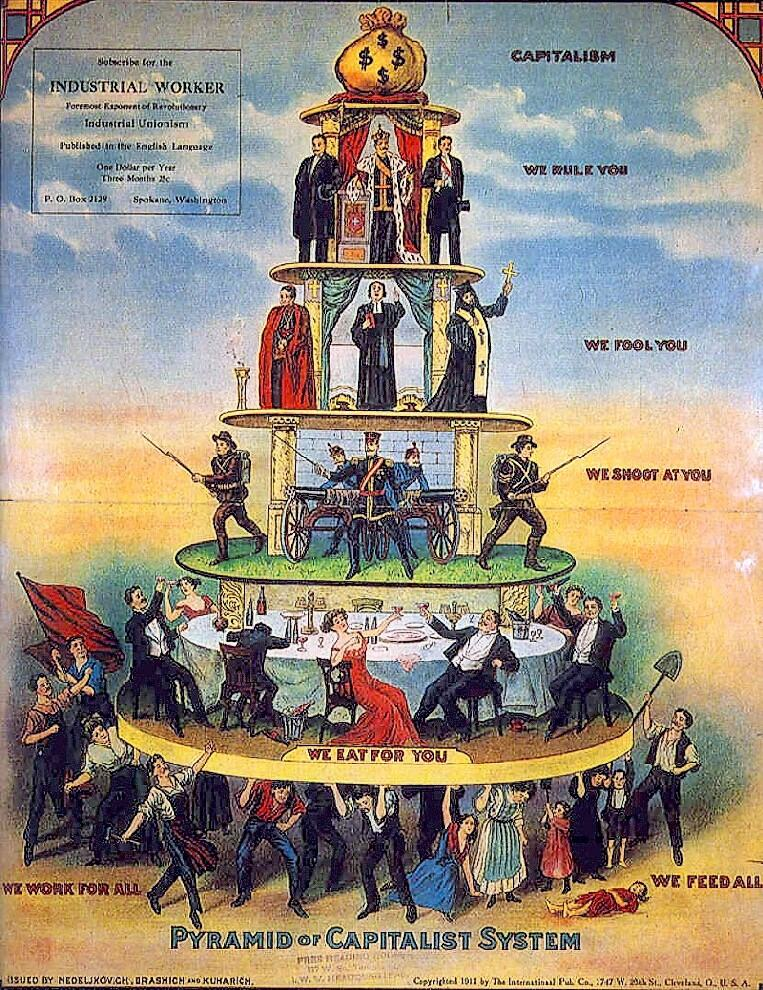
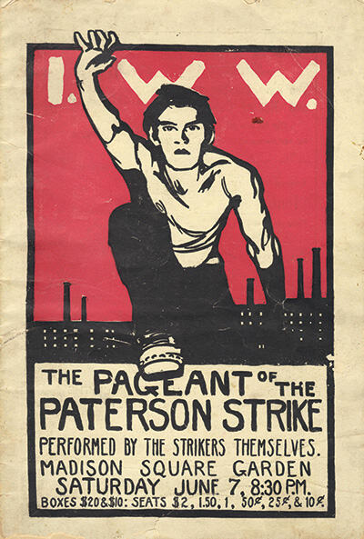
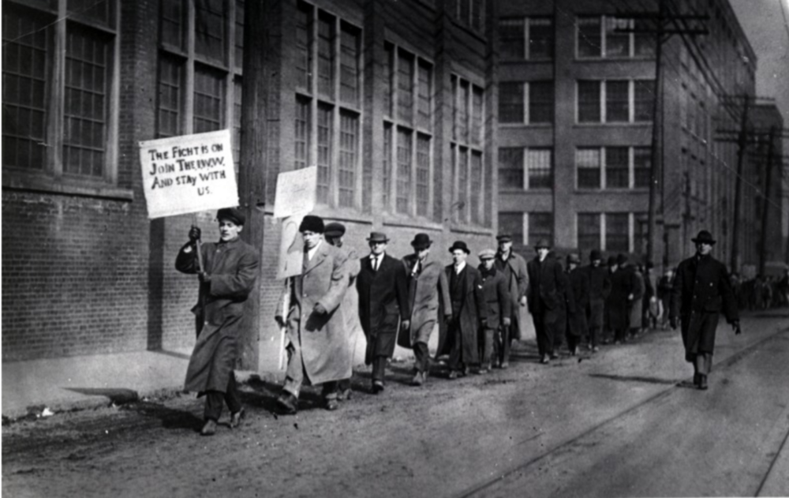

FILE 04 // EST. 1895 // ORIGIN: NEW YORK CITY // STATUS: BLUEPRINT, UNBUILT
DE LEONISM
America's own revolutionary socialism: win the vote to make it legal,
build One Big Union to make it real — then dissolve the state into an industrial republic
administered from the shop floor.
SOCIALIST INDUSTRIAL UNIONISMMETHOD: BALLOT + UNIONMADE IN USA
SPAWNED FROM
Marxism— read strictly, applied to American conditions
vs. "pure and simple" unionism — Gompers' AFL, his lifelong target
vs. the anarcho-syndicalist IWW — 1908: the ballot clause fight
01 Origin Vector
Daniel De Leon is the archive's least likely founder: born on Curaçao in 1852, educated in
Europe, a Columbia law lecturer who walked away from the academy into the tiny Socialist Labor Party
and rebuilt it, from 1890 until his death in 1914, into the most doctrinally disciplined Marxist
organization in the English-speaking world. He edited its paper, The People, for a quarter
century — Lenin, no soft grader, later ranked him among the few who had added anything to Marxism
since Marx.
His problem was American: a mass franchise already existed, so the European excuse — workers cannot
vote — did not apply. But he had watched American elections be bought, counted crookedly, and overturned.
His synthesis: the ballot alone is a bluff, the strike alone is a riot. Political victory would give
the revolution its legal title; the industrial union — organized by industry, not craft — would
give it possession. Either without the other loses.
02 Core Doctrine
The ballot as civilized conquest
The socialist party runs for office not to govern capitalism but to win a majority mandate for
abolishing it — proof, in the state's own arithmetic, that the people have decided. De Leon called
it revolution "by civilized means."
One Big Union takes possession
On victory day the party dissolves and Socialist Industrial Unions — already organized in every
industry — simply keep the economy running under workers' administration. The union is the embryo
of the new state inside the shell of the old.
The Industrial Republic
Government by territory (Congress, districts) is replaced by government by industry: an
all-industrial congress of delegates from each sector, planning production. Geography is a feudal
leftover; the factory floor is the real constituency.
War on the "labor faker"
His term for union officials who negotiate the price of exploitation instead of its abolition.
The AFL's craft unionism, splitting workers by trade, was for De Leon capitalism's best defense —
a judgment that made him enemies in every union hall in America.
03 Key Figures
DANIEL DE LEON 1852–1914 // the incorruptible editor
04 In Practice
The high-water mark was Chicago, 1905: De Leon on the founding platform of the Industrial Workers
of the World beside Debs and Haywood — One Big Union, actually assembling. It lasted three years.
In 1908 the syndicalist wing struck the political clause from the IWW constitution, judging elections
a swindle; De Leon's faction walked out with the blueprint. The SLP itself ran candidates for another
century — its 1912 vote was its peak — and dissolved as a party in 2008, having never been large and
never once been scandalized: no purge, no grift, no line change. The joke and the epitaph are the same
sentence.
05 Schisms & Enemies
vs. Gompers' AFL. Craft unionism as class collaboration: the founding polemic, repaid with
total exclusion from the mainstream labour movement.
vs. the direct-actionist IWW (1908). Ballot plus union, or union alone? The split turned the
IWW anarcho-syndicalist and left De Leonism a doctrine in search of a mass base.
vs. Bolshevism, posthumously. Lenin praised De Leon's industrial-republic scheme as close to
soviet power; the SLP returned the compliment by refusing the Comintern — dictatorship by a party,
it held, was exactly the wrong instrument in a country with the franchise.
06 Timeline
1852De Leon born at Curaçao, Dutch Caribbean.
1890Joins the Socialist Labor Party; editor of The People two years later.
1895Founds the Socialist Trade & Labor Alliance — the first draft of socialist industrial unionism.
1905Co-founds the IWW in Chicago; Socialist Reconstruction of Society, the mature blueprint, in one Minneapolis speech that July.
1908The IWW deletes the ballot; De Leonists exit.
1914De Leon dies in New York.
2008The SLP suspends operations after 132 unbroken, unbribed years.
07 Legacy
De Leonism is the archive's road not taken: a fully worked-out revolutionary program with no
insurrection, no vanguard dictatorship, and no successful implementation to be judged by. Its DNA
persists anyway — in every syndicalist chart of "industrial democracy," in council communism's
workplace republics, and in the recurring intuition, on every shop floor, that the people who run
production could simply… run production.
08 Plates
The American fork: industrial unionism plus the ballot. Its iconography is the clearest the tradition ever produced, because it was aimed at workers who had ten minutes and no theory.

1911 // the Pyramid of the Capitalist System — the whole argument in one image

1913 // Paterson silk strike — the union that staged its own strike as theatre

1912 // Lawrence — "Bread and Roses", and the IWW's high-water mark
Plates are vendored from Wikimedia Commons under their own licences and re-encoded to web size; the credit for each is listed in the Plate Room.